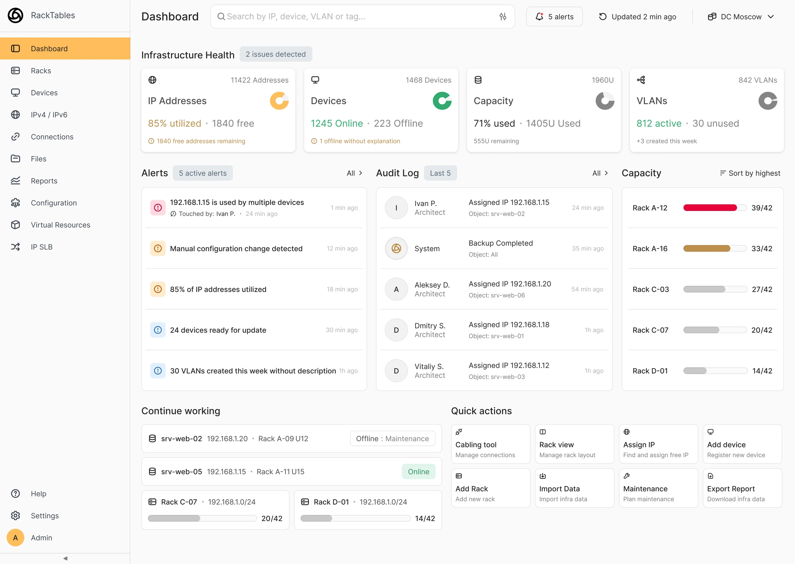

RackTables — дашборд для управления IT-инфраструктурой
Задача
Главный экран отражал структуру системы, но не отвечал на вопрос, с которым в неё заходят: что происходит и всё ли хорошо.
Что получилось
Экран стал давать оценку состояния дата-центра, показывать активные проблемы и позволять перейти к действию, не уходя в разделы.
Обзор решения

Главный экран
12 → 1
Вместо каталога из 12 разделов — один экран с оценкой состояния.
Конфликт IP-адреса
3 клика
Разрешение прямо из алерта на главной, без перехода в разделы.
Основа требований
2 интервью
Dev-ops инженер и системный администратор — на их барьерах построено решение.
Важно. Цифры описывают спроектированное решение, а не измеренный эффект: это тестовое задание, продукт не выходил в прод. Всё, что можно проверить — интервью и макеты.
Как я к этому шёл
01
Разобрался, кто и зачем сюда заходит
Два глубинных интервью — с dev-ops инженером и системным администратором. Разбор четырёх аналогов: NetBox, Device42, Nautobot, Proxmox.
02
Понял, где именно люди спотыкаются
JTBD по четырём ситуациям, требования к продукту и гипотезы. Каждый сценарий разложил на шаги и барьеры.
03
Спроектировал и проверил на прототипе
Дашборд состояния и два флоу: разрешение конфликта IP и смена статуса устройства. Собрано на токенах Gravity UI, интерактивный прототип.
Проблемы
Четыре инсайта из интервью
Собираем следующим шагом.
Решение
Главный экран отвечает на четыре вопроса, с которыми в систему заходят
Каждый блок дашборда закрывает конкретный барьер из интервью. Ткни в точку на экране, чтобы посмотреть какой.

Что это даёт
Оценка состояния, активные проблемы и переход к действию — на одном экране, без походов в разделы. Конфликт IP-адреса разрешается в три клика прямо из алерта.
Это свойства спроектированного решения — их видно по макетам и прототипу. Действительно ли они ускоряют реакцию на инцидент, покажут только UX-тесты на реальных инженерах: продукт не выходил в прод, замеров нет.
Итог
Как решение отвечает на исходную задачу
Собираем следующим шагом.